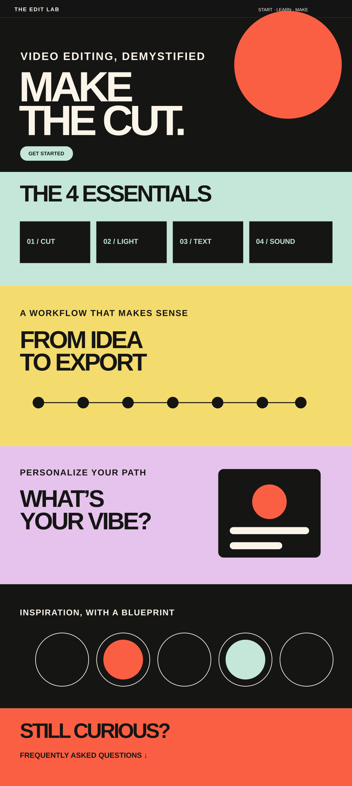

Outcome-driven
They want a fast route to a visible result: a video that feels polished enough to publish.
01 / The brief
The brief was not simply to explain video-editing tools. The instructional challenge was to help beginner creators understand what to do, in what order, and why each decision matters when building a video.
I began by defining the target performance: enabling a learner to plan and complete a first edit with confidence. I then identified the minimum essential knowledge, removed advanced material that did not support that goal, and translated the remaining content into a clear, visual learning journey.
02 / Audience analysis
The audience is digitally fluent, but not yet fluent in editing. They are motivated by publishing a stronger video — not by learning software for its own sake. That distinction shaped both the content and the format.
They want a fast route to a visible result: a video that feels polished enough to publish.
Professional interfaces, unfamiliar terms, and fear of making mistakes can stop progress before it begins.
They scan, compare examples, and learn by trying. The experience needed to support short visits without losing the overall sequence.
The advice needed to feel relevant across TikTok, Reels, and YouTube while teaching principles that transfer between tools.
03 / Content analysis
Video editing is a broad professional domain. I needed to distinguish the knowledge required for a successful first edit from advanced features that would add cognitive load without supporting the immediate learning goal.
Scattered tips do not create a usable mental model. The content needed to follow the creator’s real task flow — from planning and shooting to editing, polishing, and exporting.
Every explanation needed to answer a practical question: “What should I do next?” Concepts were paired with examples, decisions, and concrete actions inside the learner’s workflow.
04 / Learning strategy
The learning architecture follows the actions involved in producing a video, rather than the menus of a specific editing program. This keeps the content transferable and goal-focused.
Short learning units, tabs, and on-demand popups reduce cognitive load while allowing the learner to stay inside one continuous journey.
Visual examples and creator references make abstract principles observable, helping learners connect a technique to the effect it creates.
A responsive one-page website minimizes navigation decisions, preserves the sequence, and lets learners revisit a specific step quickly while editing on another screen.
05 / Content architecture
Cutting, lighting, text, and sound — the four principles beginners need to recognize before using advanced tools.
A step-by-step route from idea and planning through shooting, editing, review, and export.
A short quiz connects the general principles to the learner’s platform, style, and current confidence level.
A creator gallery deconstructs successful videos so learners can see how the principles work in context.
An FAQ provides just-in-time answers to common beginner questions without interrupting the main learning flow.
The learner receives a clear mental model of the process, understands the purpose of each stage, and can move from explanation to a practical first edit.
The modular content structure can be updated as platforms, trends, and editing tools change without rebuilding the entire learning journey.
Scroll inside the prototype and click through the learning interactions, tabs, and guided content.

Open interactive prototype06 / Learning decisions made visible
Each interface decision began with an instructional question: what does the learner need to understand, do, or decide next? The examples below show how content strategy, learning goals, and UX/UI were translated into specific screen-level decisions.
01 / Learning promise → first screen
02 / Content model → interactive principles
03 / Task analysis → production workflow
04 / Learner variables → personalized guidance
05 / Worked examples → inspiration gallery
06 / Performance support → FAQ